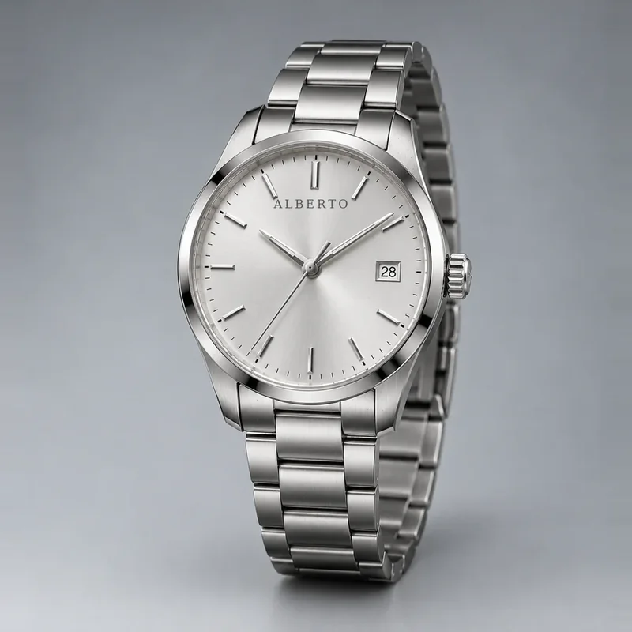
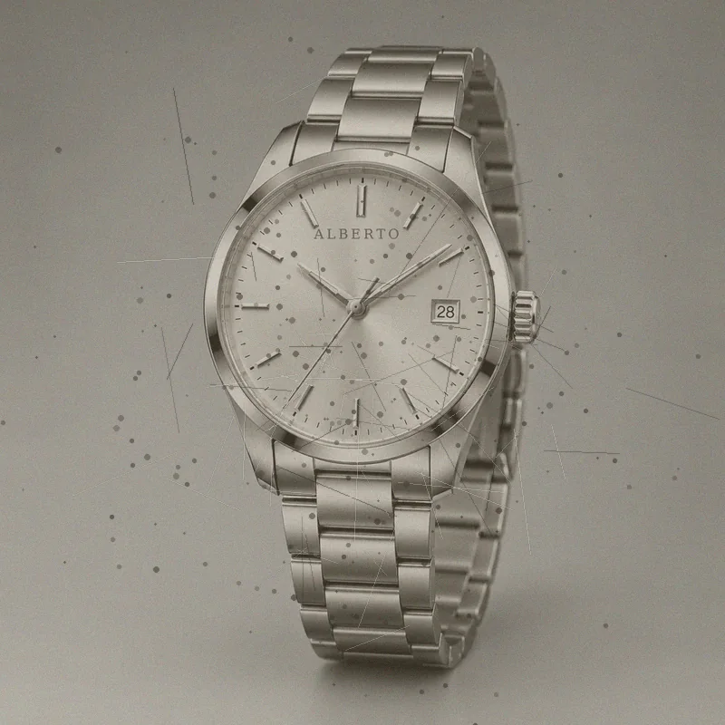

Support
Repairs, appraisals and warranty help.
Book a repair slot
Choose a store, date and time. We confirm on WhatsApp.
Repair service
Battery changes take about 30 minutes. Full movement servicing takes 2 to 4 weeks. We give a written quote before any work starts.
Appraisal
Bring your watch and papers to any store. We check the movement, case and condition, and give you a written value for sale or insurance.
Warranty
New watches carry a 2 year warranty. Keep your receipt and warranty card together.
Ask a question
Email Hassan836usis@gmail.com or use the Contact Us page.
Check your repair status
Enter the code from your repair slip. For this demo, try ALB-1001, ALB-1002 or ALB-1003.
Before and after
Drag the slider to compare a sample restoration. These are sample photos for the demo.


Frequently asked questions
Our repair process
What happens after you hand over your watch.
Inspection
We check the movement, case, crystal and seals.
Quote
A written price and time estimate. You approve before work begins.
Servicing
Cleaning, oiling, new parts and water-resistance testing.
Final test
Timed for several days, then returned with a service warranty.
Still have a question?
Write to us and we reply within one working day.